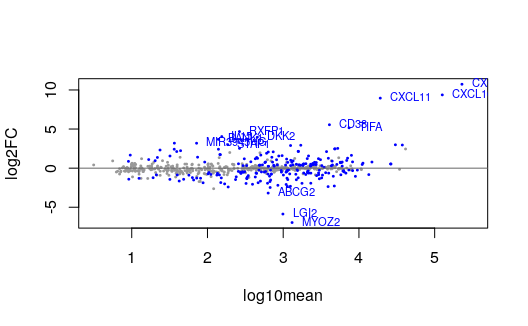

Swish: differential expression accounting for inferential uncertainty
Anqi Zhu
Avi Srivastava
Hirak Sarkar
Euphy Wu
Noor Pratap Singh
Scott Van Buren
Joseph Ibrahim
Rob Patro
Michael Love
01/28/2022
Source:vignettes/swish.Rmd
swish.RmdThe Swish method
The Swish method for differential expression analysis of bulk or single-cell RNA-seq data using inferential replicate counts is described in the following reference: Zhu et al. (2019) doi: 10.1093/nar/gkz622.
We note that Swish extends and builds on another method, SAMseq (Li and Tibshirani 2011), implemented in the samr package, by taking into account inferential uncertainty, and allowing to control for batch effects and matched samples. Additionally, Swish has methods for testing changes in effect size across secondary covariates, which we refer to as “interactions.” Swish also implements correlation tests as in the original SAMseq package. swish calls functions from the qvalue (Storey and Tibshirani 2003) or samr package for calculation of local FDR and q-value. This vignette gives an example of differential analysis of matched samples, and an interaction test for matched samples, to see if a condition effect changes in magnitude across two groups of samples.
Quick start
The following lines of code will perform a basic transcript-level swish two group analysis of bulk RNA-seq. For more details, read on. There is a special section below for two-group analysis of scRNA-seq.
# 'coldata.csv': sample information table
coldata <- read.csv("coldata.csv")
library(tximeta)
y <- tximeta(coldata) # reads in counts
library(swish)
y <- scaleInfReps(y) # scales counts
y <- labelKeep(y) # labels genes to keep
set.seed(1)
y <- swish(y, x="condition") # simplest Swish caseNote: Inferential replicates, either from Gibbs sampling or bootstrapping of reads, are required for the swish method. When running Salmon, you can set --numGibbsSamples 30 to generate Gibbs samples, or --numBootstraps 30 to generate bootstrap samples (we typically recommend 20-30 inferential replicates).
The results can be found in mcols(y). For example, one can calculate the number of genes passing a 5% FDR threshold:
table(mcols(y)$qvalue < .05)One can at any point remove the genes that didn’t pass the expression filter with the following line of code (can be run before or after swish). These genes are ignored by swish, and so will have NA in the results columns in mcols(y).
y <- y[mcols(y)$keep,]A gene-level analysis looks identical to a transcript-level analysis, only the input data changes. Examples follow.
Lastly, what is the structure of the output of tximeta (Love et al. 2020), which is used in swish? See the section below, Structure of tximeta output / swish input.
Macrophage stimulation experiment
We begin the fishpond vignette by loading data from a Bioconductor Experiment Data package, macrophage. The package contains RNA-seq quantification from 24 RNA-seq samples, which are a subset of the RNA-seq samples generated and analyzed by Alasoo et al. (2018) - doi: 10.1038/s41588-018-0046-7.
The experiment involved treatment of macrophage cell lines from a number of human donors with IFN gamma, Salmonella infection, or both treatments combined. In the beginning of this vignette, we will focus on comparing the IFN gamma stimulated cell lines with the control cell lines, accounting for the paired nature of the data (cells from the same donor). Later in the vignette we will analyze differences in the Salmonella infection response by IFN gamma treatment status – whether the cells are primed for immune response.
We load the package, and point to the extdata directory. For a typical analysis, the user would just point dir to the location on the machine or cluster where the transcript quantifications are stored (e.g. the quant.sf files).
library(macrophage)
dir <- system.file("extdata", package="macrophage")The data was quantified using Salmon (Patro et al. 2017) 0.12.0 against the Gencode v29 human reference transcripts (Frankish, GENCODE-consoritum, and Flicek 2018). For more details and all code used for quantification, refer to the macrophage package vignette.
Importantly, --numGibbsSamples 20 was used to generate 20 inferential replicates with Salmon’s Gibbs sampling procedure. We also recommend to use --gcBias when running Salmon to protect against common sample-specific biases present in RNA-seq data.
Data import
Read in the column data from CSV
We start by reading in a CSV with the column data, that is, information about the samples, which are represented as columns of the SummarizedExperiment object we will construct containing the counts of reads per gene or transcript.
## names sample_id line_id replicate condition_name macrophage_harvest
## 1 SAMEA103885102 diku_A diku_1 1 naive 11/6/2015
## 2 SAMEA103885347 diku_B diku_1 1 IFNg 11/6/2015
## 3 SAMEA103885043 diku_C diku_1 1 SL1344 11/6/2015
## 4 SAMEA103885392 diku_D diku_1 1 IFNg_SL1344 11/6/2015
## 5 SAMEA103885182 eiwy_A eiwy_1 1 naive 11/25/2015
## 6 SAMEA103885136 eiwy_B eiwy_1 1 IFNg 11/25/2015
## salmonella_date ng_ul_mean rna_extraction rna_submit library_pool
## 1 11/13/2015 293.9625 11/30/2015 12/9/2015 3226_RNAauto-091215
## 2 11/13/2015 293.9625 11/30/2015 12/9/2015 3226_RNAauto-091215
## 3 11/13/2015 293.9625 11/30/2015 12/9/2015 3226_RNAauto-091215
## 4 11/13/2015 293.9625 11/30/2015 12/9/2015 3226_RNAauto-091215
## 5 12/2/2015 193.5450 12/3/2015 12/9/2015 3226_RNAauto-091215
## 6 12/2/2015 193.5450 12/3/2015 12/9/2015 3226_RNAauto-091215
## chemistry rna_auto
## 1 V4_auto 1
## 2 V4_auto 1
## 3 V4_auto 1
## 4 V4_auto 1
## 5 V4_auto 1
## 6 V4_auto 1We will subset to certain columns of interest, and re-name them for later.
Add a column pointing to your files
coldata needs to have a column files which specifies the path to the quantification files. In this case, we’ve gzipped the quantification files, so we point to the quant.sf.gz file. We make sure that all the files exist in the location we specified.
coldata$files <- file.path(dir, "quants", coldata$names, "quant.sf.gz")
all(file.exists(coldata$files))## [1] TRUERead in quants with tximeta
We will read in quantification data for some of the samples. First we load the SummarizedExperiment package. We will store out data and the output of the statistical method in a SummarizedExperiment object. We use the tximeta (Love et al. 2020) package to read in the data:
We load in the quantification data with tximeta:
We can see that all the assays have been loaded:
assayNames(se)## [1] "counts" "abundance" "length" "infRep1" "infRep2" "infRep3"
## [7] "infRep4" "infRep5" "infRep6" "infRep7" "infRep8" "infRep9"
## [13] "infRep10" "infRep11" "infRep12" "infRep13" "infRep14" "infRep15"
## [19] "infRep16" "infRep17" "infRep18" "infRep19" "infRep20"tximeta loads transcript-level data, although it can later be summarized to the gene levels:
## [1] "ENST00000456328.2" "ENST00000450305.2" "ENST00000488147.1"
## [4] "ENST00000619216.1" "ENST00000473358.1" "ENST00000469289.1"We will rename our SummarizedExperiment y for the statistical analysis. For speed of the vignette, we subset to the transcripts on chromosome 1.
y <- se
y <- y[seqnames(y) == "chr1",]To demonstrate a two group comparison, we subset to the “naive” and “IFNg” groups. Log fold changes will be made comparing IFNg to naive (the reference level).
y <- y[,y$condition %in% c("naive","IFNg")]
y$condition <- factor(y$condition, levels=c("naive","IFNg"))Note on factor levels: The swish function compares expression level across factors such that log2 fold changes are reported as the non-reference level over the reference level. By default, R will choose a reference level for factors based on alphabetical order, unless levels are explicitly set. It is recommended to set the factors levels, as in the above code chunk, with the reference level coming first in the character vector, so that log2 fold changes correspond to the comparison of interest.
Differential transcript expression
Running Swish at the transcript level
Running swish has three steps: scaling the inferential replicates, labeling the rows with sufficient counts for running differential expression, and then calculating the statistics. As swish makes use of pseudo-random number generation in breaking ties and in calculating permutations, to obtain identical results, one needs to set a random seed before running swish(), as we do below.
The default number of permutations in swish is nperms=100. However, for paired datasets as this one, you may have fewer maximum permutations. In this case, there are 64 possible ways to switch the condition labels for six pairs of samples. We can set the nperms manually (or if we had just used the default value, swish would set nperms to the maximum value possible and notify the user that it had done so).
library(fishpond)
y <- scaleInfReps(y)
y <- labelKeep(y)
y <- y[mcols(y)$keep,]
set.seed(1)
y <- swish(y, x="condition", pair="line", nperms=64)A note about labelKeep: by default we keep features with minN=3 samples with a minimal count of 10. For scRNA-seq data with de-duplicated UMI counts, we recommend to lower the count, e.g. a count of 3, across a higher number of minN cells, depending on the number of cells being compared. You can also set x="condition" when running labelKeep which will use the condition variable to set minN.
The results are stored in mcols(y). We will show below how to pull out the top up- and down-regulated transcripts.
We can see how many transcripts are in a 5% FDR set:
table(mcols(y)$qvalue < .05)##
## FALSE TRUE
## 5081 1329A number of features may have the same pvalue and qvalue due to the procedure for assessing significance. We can additionally rank features by their effect size, to break ties in the qvalue:
most.sig <- with(mcols(y),
order(qvalue, -abs(log2FC)))
mcols(y)[head(most.sig),c("log2FC","qvalue")]## DataFrame with 6 rows and 2 columns
## log2FC qvalue
## <numeric> <numeric>
## ENST00000370459.7 10.26592 2.40755e-05
## ENST00000355754.6 9.79927 2.40755e-05
## ENST00000481145.1 8.78193 2.40755e-05
## ENST00000443807.1 8.36831 2.40755e-05
## ENST00000370473.4 8.11405 2.40755e-05
## ENST00000368042.7 7.97654 2.40755e-05The top 6 genes by qvalue and effect size in this case all have positive LFC, although we have ranked by the largest in absolute value, so large negative values will also appear in this list.
Plotting results
We can check the distribution of p-values. This looks as expected for a comparison where we expect many transcripts will be affected by the treatment (IFNg stimulation of macrophage cells). There is a flat component and then an enrichment of transcripts with p-values near 0.
hist(mcols(y)$pvalue, col="grey")
Of the transcripts in this set, which have the most extreme log2 fold change? Note that often many transcripts will share the same q-value, so it’s valuable to look at the log2 fold change as well (see further note below on q-value computation). The log2 fold change computed by swish is the median over inferential replicates, and uses a pseudo-count of 5 on the scaled counts, to stabilize the variance on the fold change from division by small counts. See the note above for interpretation of log2 fold changes with respect to the levels of x.
With the following code chunk, we construct two vectors that give the significant genes with the lowest (most negative) and highest (most positive) log2 fold changes.
## sign.lfc
## sig -1 0 1
## FALSE 2827 2 2252
## TRUE 616 0 713Here we print a small table with just the calculated statistics for the large positive log fold change transcripts (up-regulation):
## [1] "tx_id" "gene_id" "tx_name" "log10mean" "keep" "stat"
## [7] "log2FC" "pvalue" "locfdr" "qvalue"
cols <- c("log10mean","log2FC","pvalue","qvalue")
print(as.data.frame(top_up)[,cols], digits=3)## log10mean log2FC pvalue qvalue
## ENST00000370459.7 3.85 10.27 2.44e-06 2.41e-05
## ENST00000355754.6 4.46 9.80 2.44e-06 2.41e-05
## ENST00000481145.1 3.41 8.78 2.44e-06 2.41e-05
## ENST00000443807.1 3.35 8.37 2.44e-06 2.41e-05
## ENST00000370473.4 4.87 8.11 2.44e-06 2.41e-05
## ENST00000368042.7 3.44 7.98 2.44e-06 2.41e-05Likewise for the largest negative log fold change transcripts (down-regulation):
top_down <- mcols(y)[head(lo),]
print(as.data.frame(top_down)[,cols], digits=3)## log10mean log2FC pvalue qvalue
## ENST00000649724.1 2.83 -6.26 9.85e-03 4.87e-02
## ENST00000305352.6 2.90 -5.54 2.44e-06 2.41e-05
## ENST00000348581.9 2.19 -4.33 2.44e-06 2.41e-05
## ENST00000451341.1 1.73 -4.11 2.44e-06 2.41e-05
## ENST00000393688.7 2.18 -3.86 7.64e-03 4.23e-02
## ENST00000610222.2 2.07 -3.45 4.49e-03 3.32e-02We can plot the scaled counts for the inferential replicates, and also group the samples by a covariate, in this case the cell line. The analysis was paired, so the statistic assessed if the change within pairs was consistent. Here we plot the 100th top up-regulated transcript. plotInfReps also has functionality for plotting uncertainty in single cell data, as will be covered in a later section.
plotInfReps(y, idx=hi[100], x="condition", cov="line")
We can make an MA plot, where the transcripts in our FDR set are colored:
plotMASwish(y, alpha=.05)
Using the addIds function from tximeta, we can easily add gene symbols. By specifying gene=TRUE, this will use the gene ID to match to gene symbols for all of the transcripts.
We can then add gene symbols to our MA plot:
plotMASwish(y, alpha=.05, xlim=c(.5,5.5))
with(
subset(mcols(y), qvalue < .05 & abs(log2FC) > 4),
text(log10mean, log2FC, SYMBOL,
col="blue", pos=4, cex=.7)
)
Differential gene expression
Running Swish at the gene level
We can also run swish at the gene level. First we summarize all of the data to the gene level, using the summarizeToGene function from tximeta. Again, we rename the object for statistical analysis, and then we subset to the genes on chromosome 1 for the demonstration.
gse <- summarizeToGene(se)
gy <- gse
gy <- gy[seqnames(gy) == "chr1",]Two demonstrate a two group comparison, we subset to the “naive” and “IFNg” groups, as before.
gy <- gy[,gy$condition %in% c("naive","IFNg")]
gy$condition <- factor(gy$condition, c("naive","IFNg"))Next we can run the same steps as before. Again we set a random seed in order to be able to reproduce exact results in the future:
gy <- scaleInfReps(gy)
gy <- labelKeep(gy)
gy <- gy[mcols(gy)$keep,]
set.seed(1)
gy <- swish(gy, x="condition", pair="line", nperms=64)As before, the number of genes in a 1% FDR set:
table(mcols(gy)$qvalue < .05)##
## FALSE TRUE
## 1057 734Plotting gene results
The histogram of p-values:
hist(mcols(y)$pvalue, col="grey")
As before, finding the genes with the most extreme log2 fold change:
## sign.lfc
## sig -1 1
## FALSE 604 453
## TRUE 369 365
sig <- mcols(gy)$qvalue < .05
glo <- order(mcols(gy)$log2FC * sig)
ghi <- order(-mcols(gy)$log2FC * sig)
gtop_up <- mcols(gy)[head(ghi),]
print(as.data.frame(gtop_up)[,cols], digits=3)## log10mean log2FC pvalue qvalue
## ENSG00000154451.14 4.15 10.24 8.72e-06 3.16e-05
## ENSG00000162654.8 4.54 10.04 8.72e-06 3.16e-05
## ENSG00000117228.9 4.90 8.13 8.72e-06 3.16e-05
## ENSG00000163568.14 2.81 6.89 8.72e-06 3.16e-05
## ENSG00000162645.12 4.35 6.61 8.72e-06 3.16e-05
## ENSG00000026751.16 4.36 6.34 8.72e-06 3.16e-05
gtop_down <- mcols(gy)[head(glo),]
print(as.data.frame(gtop_down)[,cols], digits=3)## log10mean log2FC pvalue qvalue
## ENSG00000170989.9 2.93 -5.26 8.72e-06 3.16e-05
## ENSG00000224968.1 1.75 -4.16 8.72e-06 3.16e-05
## ENSG00000007968.6 2.73 -3.35 8.72e-06 3.16e-05
## ENSG00000183856.10 3.41 -3.06 8.72e-06 3.16e-05
## ENSG00000085999.11 2.47 -2.92 1.02e-02 3.42e-02
## ENSG00000229162.1 1.65 -2.86 8.72e-06 3.16e-05We can plot a particular one of these genes:
plotInfReps(gy, idx=ghi[100], x="condition", cov="line")
As expected, the highly up-regulated genes are involved in immune response. Many genes encoding guanylate-binding proteins (GBP) are up-regulated, and these proteins are induced by interferon, produced in response to infection by pathogenic microbes.
We can make an MA plot, where the genes in our FDR set are colored:
plotMASwish(gy, alpha=.05)
Again, using the addIds function from tximeta, we can easily add gene symbols to our gene-level expression analysis:
We can then add gene symbols to our MA plot:
plotMASwish(gy, alpha=.05, xlim=c(.5,5.5))
with(
subset(mcols(gy), qvalue < .05 & abs(log2FC) > 3),
text(log10mean, log2FC, SYMBOL,
col="blue", pos=4, cex=.7)
)
Differential transcript usage
We have added a new function isoformProportions which can be run after scaleInfReps (and optionally after removing genes via labelKeep and subsetting the SummarizedExperiment). This function, isoformProportions will create a new assay isoProp from the scaledTPM counts, containing isoform proportions per gene. The same procedure will also be applied to all the inferential replicates. Note that after isoformProportions the transcripts from single isoform genes will be removed, and the transcripts will be re-ordered by gene (alphabetically by gene).
Following this function, running swish will be equivalent to a test of differential transcript usage, taking account of the uncertainty in transcript abundances, as it will look for transcripts where the isoform proportions change across condition.
# run on the transcript-level dataset
iso <- isoformProportions(y)
# `nperms=64` here is atypical, usually not specified, see note above
iso <- swish(iso, x="condition", pair="line", nperms=64)Interaction designs
We also provide in swish methods for testing if a condition effect varies across a secondary covariate, using matched samples for condition, or un-matched samples, which we refer to as “interactions” in the software.
If matched samples are available, we compute the log2 fold change for each pair of samples across condition in the same covariate group, and then we use a Wilcoxon rank sum statistic for comparing the log2 fold changes across the secondary covariate. For permutation significance, the secondary covariate labels of the pairs are permuted. For unmatched samples, multiple random “pseudo-pairs” of samples across condition within the two covariate groups are chosen, and the statistic computed as above, averaging over the random pseudo-pairings. The motivation for the above permutation schemes is to ensure the following condition, that “under the null hypothesis, the likelihood of the data is invariant under these permutations” (Anderson and Ter Braak 2003), where our null hypothesis specifically involves the interaction between condition and the secondary covariate.
For the macrophage dataset we have been working with (Alasoo et al. 2018), we have a 2x2 experimental design, with IFN gamma stimulation, Salmonella infection, and both treatments, as well as control samples. We have these four conditions across 6 cell lines from 6 donors (a subset of all the RNA-seq samples available). So we can use the first method described above, where the cell line is used to match samples across condition. Our implementation does not make use of the pairing information across the secondary covariate, but we will still be well powered to detect differences in the log2 fold change.
Condition and secondary covariates
We begin the interaction analysis by re-loading the SummarizedExperiment with all the samples, and defining two new factors indicating IFNg status and Salmonella status:
se$ifng <- factor(ifelse(
grepl("IFNg",se$condition),
"treated","control"))
se$salmonella <- factor(ifelse(
grepl("SL1344",se$condition),
"infected","control"))
with(colData(se),
table(ifng, salmonella)
)## salmonella
## ifng control infected
## control 6 6
## treated 6 6We will work with the chromosome 1 transcripts for demonstration:
y2 <- se
y2 <- y2[seqnames(y2) == "chr1",]Create and check paired samples
Our implementation of the interaction design for matched samples takes into account matched samples within the x condition, which we will specify to be the Salmonella infection status. We will specify the secondary covariate cov to be the IFN gamma treatment. We will look for transcripts where the infection response changes based on IFN gamma treatment.
We actually have matched samples across both IFN gamma treatment and Salmonella infection, but the extra pairing is not used by our current implementation of interactions (it is common that there would not be pairing across the secondary covariate).
To perform the analysis, we create a new variable pair which will record which samples are related within a group based on IFN gamma treatment status.
y2$pair <- as.numeric(factor(y2$line))
y2$pair[y2$ifng == "control"]## [1] 1 1 2 2 3 3 4 4 5 5 6 6
y2$pair[y2$ifng == "treated"]## [1] 1 1 2 2 3 3 4 4 5 5 6 6
y2$pair[y2$ifng == "treated"] <- rep(7:12,each=2)
y2$pair <- factor(y2$pair)
table(y2$pair, y2$salmonella)##
## control infected
## 1 1 1
## 2 1 1
## 3 1 1
## 4 1 1
## 5 1 1
## 6 1 1
## 7 1 1
## 8 1 1
## 9 1 1
## 10 1 1
## 11 1 1
## 12 1 1Swish for interaction effects
We now perform swish analysis, specifying the Salmonella infection as our main condition, the IFN gamma treatment as the secondary covariate, and providing the pairing within IFN gamma treatment groups. We specify interaction=TRUE to test for differences in infection response across IFN gamma treatment group.
y2 <- scaleInfReps(y2)
y2 <- labelKeep(y2)
y2 <- y2[mcols(y2)$keep,]
set.seed(1)
y2 <- swish(y2, x="salmonella", cov="ifng", pair="pair", interaction=TRUE)Plotting interaction results
In this case, we appear to have fewer non-null p-values from first impression of the p-value histogram:
hist(mcols(y2)$pvalue, col="grey")
The MA plot shows significant transcripts on either side of log2FC=0. Note that the log2 fold change reported is the difference between the log2 fold change in the IFN gamma treated and IFN gamma control group. So positive log2FC in this plot indicates that the effect is higher with IGN gamma treatment than in absence of the treatment.
plotMASwish(y2, alpha=.05)
We can plot some of the transcripts with high log fold change difference across IFN gamma treatment group, and which belong to the less than 5% nominal FDR group:
idx <- with(mcols(y2), which(qvalue < .05 & log2FC > 5))
plotInfReps(y2, idx[1], x="ifng", cov="salmonella")
plotInfReps(y2, idx[2], x="ifng", cov="salmonella")
Correlation with continuous variables
Swish now has methods to compute correlations ("spearman" or "pearson") of a continuous variable x with the log counts, and then assess the significance of those correlations using inferential replicates and permutation tests. Additionally, one can compute correlations of a covariate cov with log fold changes across a pairing variable (where x labels the condition for the log fold change and pair labels the pairs). The Spearman-based test statistic follows the procedure from the original method SAMseq that Swish is based upon (Li and Tibshirani 2011), e.g. the methods used in that package with a quantitative response type. See ?swish and the cor argument for more details on the use of correlations within Swish.
alevin scRNA-seq
The alevin (Srivastava et al. 2019) and tximport / tximeta maintainers have created an efficient format for storing and importing the sparse scRNA-seq estimated gene counts, inferential mean and variance data, and optionally the inferential replicate counts. tximeta will automatically import these matrices if alevin was run using --numCellBootstraps (in order to generate inferential variance) and additionally --dumpFeatures (in order to dump the inferential replicates themselves, see below on thoughts on avoiding this step though).
The storage format for counts, mean, variance, and inferential replicates, involves writing one cell at a time, storing the locations of the non-zero counts, and then the non-zero counts. The matrices are loaded into R sparely using the Matrix package. The storage format is efficient, for example, the estimated counts for the 900 mouse neuron dataset from 10x Genomics takes up 4.2 Mb, the mean/variance matrices take up 8.6 Mb each, and the inferential replicates takes up 72 Mb (20 bootstrap inferential replicates). Hence avoiding writing and importing the inferential replicates themselves, and only using the mean and variance, is desirable.
The swish and alevin authors have developed a workflow that uses inferential mean and variance to generate pseudo-inferential replicates in place of the actual inferential replicates. Storing and importing only the inferential mean and variance is much more efficient (dramatically faster load time and less space on disk and in memory). The faster workflow would then skip --dumpFeatures when running alevin, or subsequently use dropInfReps=TRUE to not load the inferential replicates into R.
Plotting: To demonstrate how the inferential mean and variance look across real scRNA-seq data, we load the neurons dataset and plot the inferential replicate data across cells. First we read in the counts, in this case using dropInfReps=TRUE because the directory includes the actual inferential replicates, not only the mean and variance. We set skipMeta=TRUE, although in general you would want tximeta to add the gene range information and other metadata if working with human, mouse, or fruit fly.
dir <- system.file("extdata", package="tximportData")
files <- file.path(dir,"alevin/neurons_900_v014/alevin/quants_mat.gz")
neurons <- tximeta(files, type="alevin",
skipMeta=TRUE, # just for vignette
dropInfReps=TRUE,
alevinArgs=list(filterBarcodes=TRUE))We can easily make a SingleCellExperiment object (Amezquita et al. 2020), and plot counts across cluster (here a randomly assigned cluster label). For more details on working with SingleCellExperiment objects, consult the following online book: Orchestrating Single-Cell Analysis with Bioconductor (Amezquita et al. 2020).
library(SingleCellExperiment)
sce <- as(neurons, "SingleCellExperiment")
sce$cluster <- factor(paste0("cl",sample(1:6,ncol(sce),TRUE)))
par(mfrow=c(2,1), mar=c(2,4,2,1))
plotInfReps(sce, "ENSMUSG00000072235.6", x="cluster",
legend=TRUE)
plotInfReps(sce, "ENSMUSG00000072235.6", x="cluster",
reorder=FALSE)
plotInfReps has a number of options and convenience arguments. One can:
- add a
legend, -
reorderthe cells by expression value within cluster, - apply size factors to the counts (
applySF) (size factor scaling will use the values insizeFactors(sce)or equivalentlymcols(sce)$sizeFactor), - use a column of
mcols(sce)to set themaintitle, e.g.mainCol="SYMBOL", - specify
xas a numeric covariate (e.g. pseudotime), and usecovto distinguish groups (e.g. lineage). Points will then be colored bycovinstead of by discretex.
See ?plotInfReps for more description of arguments.
Note that the figures scale to some degree by the number of cells; for example with \(n \in [1,150)\) or \([150,400)\), more visual elements per cell will be included:

Advice on Swish testing: swish can be run on alevin counts imported with tximeta, but there are a few extra steps suggested. The following does not use evaluated code chunks, but provides suggestions for how to tailor swish to single-cell datasets.
Filter genes: we recommend to filter genes as the first step, to reduce the size of the data before losing sparsity on the count matrices (conversion of data to ranks loses data sparsity inside the swish() function). One can run labelKeep therefore before scaleInfReps. E.g., to remove genes for which there are not 10 cells with a count of 3 or more:
y <- labelKeep(y, minCount=3, minN=10)
y <- y[mcols(y)$keep,] # subset genesSubset cells: One should also subset to the groups of cells of interest for differential testing, in order to take up the least amount of memory when the sparse matrices are converted to dense matrices. Note that swish only allows for differential testing of two groups (although it allows for blocking factors and interaction tests).
(Slower) With inferential replicates: After one has filtered both genes and cells down to the set that are of interest for differential testing, one can run the following commands, to make the sparse matrices into dense ones, scale the cells, and perform Swish differential expression, however read on for faster suggestions.
assays(y) <- lapply(assays(y), as.matrix) # make dense matrices
y <- scaleInfReps(y, lengthCorrect=FALSE, sfFun=sfFun)
y <- swish(y, x="condition")Size factor function: Note that scaleInfReps has an argument sfFun which allows the user to provide their own size factor calculation function. We have found that calculateSumFactors (Aaron T. L. Lun, Bach, and Marioni 2016) in the scran package (A. T. L. Lun, McCarthy, and Marioni 2016) works well for computing size factors. sfFun should be specified as a function that returns a vector of size factors, or a numeric vector of the size factors themselves.
(Faster) Without inferential replicates: The following workflow can be used in the case that assayNames(y) only contains counts, mean, and variance, which is much faster by avoiding writing/importing inferential replicates. We first generate pseudo-inferential replicates from inferential mean and variance matrices before running scaleInfReps from the code chunk above. The generation of pseudo-inferential replicates is described in Van Buren et al. (2020).
The following function can be used just before scaleInfReps:
y <- makeInfReps(y, 20)There is alternatively a scheme for splitting the operation of generating (dense) inferential replicate matrices across multiple jobs, and running swish across batches of genes at a time. This job-splitting procedure is also described and benchmarked in Van Buren et al. (2020). This helps to reduce the total memory used, in the case that the counts, mean, and variance matrices are too large to be made dense altogether. This scheme involves 1) splitting the object into smaller pieces, written out to .rds files, 2) running swish as a distributed job, 3) reading the .csv output back into R. The following code chunk would start with a ‘y’ with sparse matrix assays, and without ever running scaleInfReps (it is run within the distributed job, and with lengthCorrect=FALSE by default).
library(SingleCellExperiment)
y <- as(y, "SingleCellExperiment")
# then, after filtering genes and cells...
# compute and store sizeFactors calculated over all genes
library(scran)
y <- computeSumFactors(y)
# split swish objects into 8 RDS files:
splitSwish(y, nsplits=8, prefix="swish", snakefile="Snakefile")
# now, run snakemake from command line
# after finished, results back into R:
y <- addStatsFromCSV(y, "summary.csv")The splitSwish function will write out a Snakefile that can be used with snakemake in order to run distributed swish jobs in an easily customized workflow. Then the addStatsFromCSV will read in and attach the results to the original object. This final alternative avoids generating dense matrices until they have been split into nsplits pieces, and so can be used to reduce the memory requirements for the individual jobs. If one is new to running snakemake, it is recommended to first run with the flags -np as a “dry-run” to see the operations that will be performed. The swish command can be customized in the swish rule in the Snakefile, e.g. to control for batches or test for interactions.
Further details
Analysis types supported by Swish
There are currently five types of analysis supported by swish:
- Two group analysis
- Two groups with two or more batches
- Two group paired or matched samples
- Two condition x two group paired samples, interaction test
- Two condition x two group samples, not paired, interaction test
This vignette demonstrated the third in this list, but the others can be run by either not specifying any additional covariates, or by specifying a batch variable with the argument cov instead of pair. The two interaction tests can be run by specifying interaction=TRUE and providing x, cov, and optionally pair.
Accounting for estimated / continuous batch effects
We have two recommended approaches for using swish in combination with estimated batch effects, e.g. factors of unwanted variation estimated by RUVSeq or surrogate variables estimated by SVA (without loss of generality, we will call these batch factors). First, examine a plot of the estimated batch factors, e.g. a stripplot (1 factor) or scatterplot of pairs (2 or more factors).
- If the samples seem to fall into discrete clusters, one can run
kmeansto assign a discrete estimated batch to each cluster. If the number of samples per condition group per batch is 2 or more, then one can use theclusteroutput of thekmeansfunction as input to thecovargument ofswish. This will then perform a stratified Mann-Whitney Wilcoxon test. - If the samples do not fall into discrete clusters, one can use the same approach that we use to correct the samples for sequencing depth variation: direct scaling of the estimated counts across the inferential replicates. Why this works: usually we do not scale counts in statistical inference pipelines because we lose the information about precision of counts across the dynamic range. However, because we keep the set of inferential replicate matrices, and these contain both sampling and additional inferential variance, we are able to track how scaling the counts affects the variance, and this informs the test statistic.
For the second approach, one can directly scale the inferential counts using limma and removeBatchEffect.
Here a demonstration using simulated data:
set.seed(1)
y <- makeSimSwishData()First we perform standard scaling for sequencing depth and labeling of feautures with too few counts. We save the mean of scaled inferential replicates using saveMeanScaled=TRUE as we will use this to estimate the batch factors.
y <- scaleInfReps(y, saveMeanScaled=TRUE)
tail(assayNames(y),4) # 'meanScaled' assay## [1] "infRep18" "infRep19" "infRep20" "meanScaled"
y <- labelKeep(y)
y <- y[mcols(y)$keep,]Next estimate the batch factors on the mean of scaled inferential count matrices.
norm_cts_for_batch <- assay(y, "meanScaled")
# use batch factor estimation method of your choosing
# ...Suppose we estimate two batch factors, w1 and w2, now we remove the variation from each inferential replicate associated with these, using limma’s removeBatchEffect.
w1 <- runif(ncol(y)) # here simulated w1, use real instead
w2 <- runif(ncol(y)) # here simulated w2, use real instead
W <- data.frame(w1, w2)
infRepIdx <- grep("infRep",assayNames(y),value=TRUE)
nreps <- length(infRepIdx)The following loads limma and removes batch associated variation on the log2 scale (a pseudocount is added to avoid -Inf values).
suppressPackageStartupMessages(library(limma))
mm <- model.matrix(~condition, colData(y))
pc <- .1
for (k in seq_len(nreps)) {
logInfRep <- log(assay(y, infRepIdx[k]) + pc)
logInfRep <- limma::removeBatchEffect(
logInfRep,
covariates=W,
design=mm)
assay(y, infRepIdx[k]) <- exp(logInfRep)
}Now we run swish as usual:
y <- swish(y, x="condition")Structure of tximeta output
While tximeta is the safest way to provide the correct input to swish, all that swish requires for running is a SummarizedExperiment object with the following assays: counts, length, and infRep1, infRep2, …, infRepN, where N is simply the number of Gibbs samples or boostraps samples, e.g. 20 in the examples above. The counts and inferential replicates are estimated counts from a quantification method, either at the transcript level or summed to the gene level (simple sum). These counts sum up to the (mapped) library size for each sample. It is assumed that the length matrix gives the effective lengths for each transcript, or average transcript length for each gene as summarized by the functions in tximeta/tximport. If the counts should not be corrected for effective length (e.g. 3’ tagged RNA-seq), then lengthCorrect=FALSE should be specified when running scaleInfReps.
Note on simulation: it is difficult to simulate inferential uncertainty in a realistic manner without construction of reads from transcripts, using a method like polyester. Constructing reads from the reference transcriptome or a sample-specific transcriptome naturally produces the structure of read-assignment inferential uncertainty that swish and other methods control for in real RNA-seq data.
Plotting q-values over statistics
As with SAMseq and SAM, swish makes use of the permutation plug-in approach for q-value calculation. swish calls the empPvals and qvalue functions from the qvalue package to calculate the q-values (or optionally similar functions from the samr package). If we plot the q-values against the statistic, or against the log2 fold change, one can see clusters of genes with the same q-value (because they have the same or similar statistic). One consequence of this is that, in order to rank the genes, rather than ranking directly by q-value, it makes more sense to pick a q-value threshold and then within that set of genes, to rank by the log fold change, as shown above when the code chunk has log2FC * sig.
gres <- mcols(gy)[mcols(gy)$keep,]
min(gres$qvalue, na.rm=TRUE) # min nominal FDR is not 0## [1] 3.156566e-05


Plotting InfRV
In the Swish paper, we describe a statistic, InfRV, which is useful for categorizing groups of features by their inferential uncertainty. Note that InfRV is not used in the swish method, but only for visualization in the paper. Here we show how to compute and plot the InfRV:
y3 <- se
y3 <- y3[seqnames(y3) == "chr1",]
y3 <- y3[,y3$condition %in% c("naive","IFNg")]
y3 <- labelKeep(y3)
y3 <- y3[mcols(y3)$keep,]
y3 <- computeInfRV(y3)
mcols(y3)$meanCts <- rowMeans(assays(y3)[["counts"]])
with(mcols(y3), plot(meanCts, meanInfRV, log="xy"))
hist(log10(mcols(y3)$meanInfRV),
col="grey50", border="white", breaks=20,
xlab="mean InfRV", main="Txp-level inferential uncertainty")
Salmon in alignment mode, how to use tximeta
If you ran Salmon in alignment mode, then a Salmon index was not used. Without a Salmon index, there is not a checksum that tximeta uses to identify the transcriptome. You can specify skipMeta=TRUE to avoid tximeta attempting to match on the transcriptome in this case.
If you want to combine transcripts to gene level (or some other level of aggregation), you can set txOut=FALSE, tx2gene=tx2gene when calling tximeta and it will pass these arguments to tximport when importing the counts and inferential replicates.
Permutation schemes for interactions
The following diagrams describe the permutation schemes used for the interaction designs implemented in swish. The case with matched samples (pair indicated by number, primary condition indicated by color, the vertical line separating the pairs by secondary covariate):

The case without matched samples (sample indicated by letter, primary condition indicated by color, the vertical line separating the samples by secondary covariate). Here multiple random pseudo-pairs are chosen across condition. The permutation scheme ensures that LFCs are always calculated between samples from the same covariate group.

Session information
## R version 4.1.1 (2021-08-10)
## Platform: x86_64-pc-linux-gnu (64-bit)
## Running under: Ubuntu 20.04.3 LTS
##
## Matrix products: default
## BLAS/LAPACK: /usr/lib/x86_64-linux-gnu/openblas-pthread/libopenblasp-r0.3.8.so
##
## locale:
## [1] LC_CTYPE=en_US.UTF-8 LC_NUMERIC=C
## [3] LC_TIME=en_US.UTF-8 LC_COLLATE=en_US.UTF-8
## [5] LC_MONETARY=en_US.UTF-8 LC_MESSAGES=C
## [7] LC_PAPER=en_US.UTF-8 LC_NAME=C
## [9] LC_ADDRESS=C LC_TELEPHONE=C
## [11] LC_MEASUREMENT=en_US.UTF-8 LC_IDENTIFICATION=C
##
## attached base packages:
## [1] stats4 stats graphics grDevices utils datasets methods
## [8] base
##
## other attached packages:
## [1] limma_3.50.0 SingleCellExperiment_1.16.0
## [3] GenomicFeatures_1.46.4 org.Hs.eg.db_3.14.0
## [5] AnnotationDbi_1.56.2 fishpond_2.1.2
## [7] tximeta_1.12.4 SummarizedExperiment_1.24.0
## [9] Biobase_2.54.0 GenomicRanges_1.46.1
## [11] GenomeInfoDb_1.30.0 IRanges_2.28.0
## [13] S4Vectors_0.32.3 BiocGenerics_0.40.0
## [15] MatrixGenerics_1.6.0 matrixStats_0.61.0
## [17] macrophage_1.10.0
##
## loaded via a namespace (and not attached):
## [1] colorspace_2.0-2 rjson_0.2.21
## [3] ellipsis_0.3.2 rprojroot_2.0.2
## [5] qvalue_2.26.0 XVector_0.34.0
## [7] fs_1.5.2 bit64_4.0.5
## [9] interactiveDisplayBase_1.32.0 fansi_1.0.2
## [11] xml2_1.3.3 splines_4.1.1
## [13] tximport_1.22.0 cachem_1.0.6
## [15] knitr_1.37 jsonlite_1.7.3
## [17] Rsamtools_2.10.0 dbplyr_2.1.1
## [19] png_0.1-7 shiny_1.7.1
## [21] BiocManager_1.30.16 compiler_4.1.1
## [23] httr_1.4.2 assertthat_0.2.1
## [25] Matrix_1.4-0 fastmap_1.1.0
## [27] lazyeval_0.2.2 cli_3.1.1
## [29] later_1.3.0 htmltools_0.5.2
## [31] prettyunits_1.1.1 tools_4.1.1
## [33] gtable_0.3.0 glue_1.6.1
## [35] GenomeInfoDbData_1.2.7 reshape2_1.4.4
## [37] dplyr_1.0.7 rappdirs_0.3.3
## [39] Rcpp_1.0.8 jquerylib_0.1.4
## [41] pkgdown_2.0.2 vctrs_0.3.8
## [43] Biostrings_2.62.0 rtracklayer_1.54.0
## [45] xfun_0.29 stringr_1.4.0
## [47] mime_0.12 lifecycle_1.0.1
## [49] restfulr_0.0.13 ensembldb_2.18.3
## [51] gtools_3.9.2 XML_3.99-0.8
## [53] AnnotationHub_3.2.1 scales_1.1.1
## [55] zlibbioc_1.40.0 ragg_1.2.1
## [57] hms_1.1.1 promises_1.2.0.1
## [59] ProtGenerics_1.26.0 parallel_4.1.1
## [61] AnnotationFilter_1.18.0 yaml_2.2.2
## [63] curl_4.3.2 memoise_2.0.1
## [65] ggplot2_3.3.5 sass_0.4.0
## [67] biomaRt_2.50.2 stringi_1.7.6
## [69] RSQLite_2.2.9 highr_0.9
## [71] BiocVersion_3.14.0 BiocIO_1.4.0
## [73] desc_1.4.0 filelock_1.0.2
## [75] BiocParallel_1.28.3 rlang_1.0.0
## [77] pkgconfig_2.0.3 systemfonts_1.0.3
## [79] bitops_1.0-7 evaluate_0.14
## [81] lattice_0.20-45 purrr_0.3.4
## [83] GenomicAlignments_1.30.0 bit_4.0.4
## [85] tidyselect_1.1.1 plyr_1.8.6
## [87] magrittr_2.0.2 R6_2.5.1
## [89] generics_0.1.1 DelayedArray_0.20.0
## [91] DBI_1.1.2 pillar_1.6.5
## [93] withr_2.4.3 abind_1.4-5
## [95] KEGGREST_1.34.0 RCurl_1.98-1.5
## [97] tibble_3.1.6 crayon_1.4.2
## [99] utf8_1.2.2 BiocFileCache_2.2.1
## [101] rmarkdown_2.11 progress_1.2.2
## [103] grid_4.1.1 blob_1.2.2
## [105] digest_0.6.29 xtable_1.8-4
## [107] httpuv_1.6.5 textshaping_0.3.6
## [109] munsell_0.5.0 bslib_0.3.1